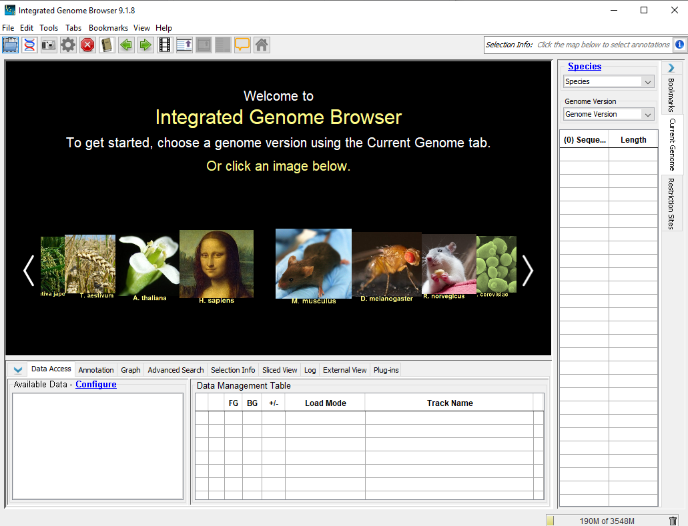
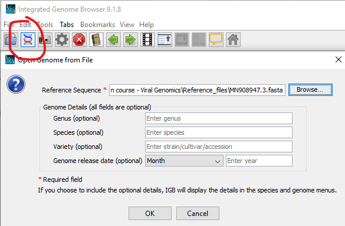
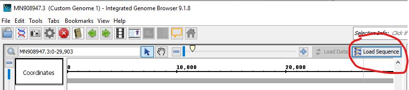
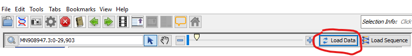
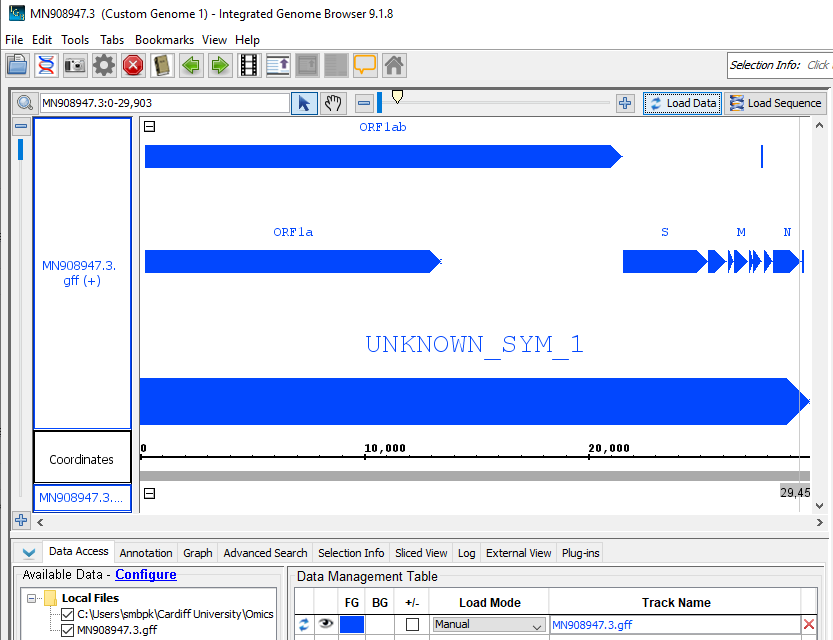
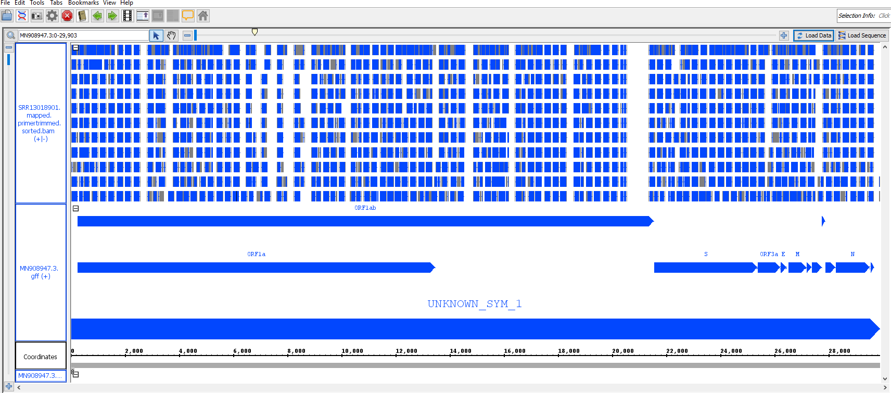
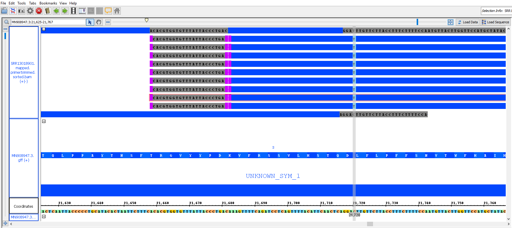
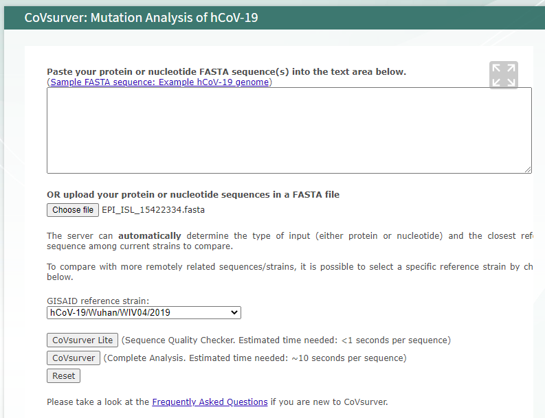
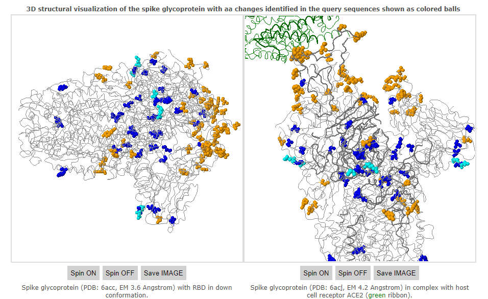
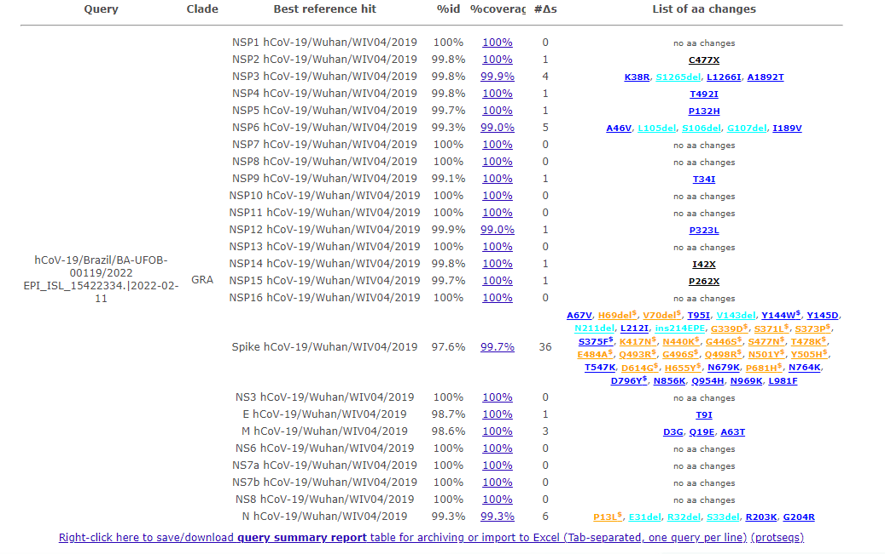

Analysis Workflow of Raw Sequencing Data
Data
For the element of the workshop we have used Viral re-sequencing data generated using the ARTIC-V3 protocol from the COVID-19 Data Portal - EMBL. The following illumia paired end data was downloaded:
SRR13018901_1.fastq.gz SRR13635734_2.fastq.gz SRR15359995_1.fastq.gz SRR15360031_2.fastq.gz SRR15910995_1.fastq.gz SRR16192823_2.fastq.gz
SRR13018901_2.fastq.gz SRR13635763_1.fastq.gz SRR15359995_2.fastq.gz SRR15365583_1.fastq.gz SRR15910995_2.fastq.gz
SRR13635734_1.fastq.gz SRR13635763_2.fastq.gz SRR15360031_1.fastq.gz SRR15365583_2.fastq.gz SRR16192823_1.fastq.gzNote: We are using ‘pair end data’ some there is 2 sequences for each sample representing the forward and reverse samples.
Reference Severe acute respiratory syndrome coronavirus 2 isolate Wuhan-Hu-1 complete genome sequence (fasta) and annotation (gff) was downloaded from NCBI nucleotide database (https://www.ncbi.nlm.nih.gov/nuccore/MN908947.3). (>send to > Complete Record > file > (FASTA/GFF3))
MN908947.3.fasta
MN908947.3.gffSoftware
cov2019 Artic Nextflow Workflow
Primary analysis work flow was performed using cov2019-artic-nf pipeline. This analysis was performed using a High Performance Linux (Ubuntu 20.04) Workstation (24 threads and 64 Gb RAM) running nexflow (https://www.nextflow.io/) and singularity (https://github.com/sylabs/singularity). command used to perform the analysis:
nextflow run connor-lab/ncov2019-artic-nf \ #analsyis pipline
-profile singularity \ #platform for software
--illumina \ #data type
--outdir $PWD/artic_analysis \ #output folder
--prefix "artic_test_run_221022" \ #output prefix
--directory $PWD/fastq_files/ #location of input files
--bed ~/covid_processing/artic_config_files/artic_V3.bed \ #primer sequences in bed format
--ref ~/covid_processing/nimagen_conf_files/MN908947.3.fasta \ #template sequence
--gff ~/covid_processing/nimagen_conf_files/MN908947.3.gff \ #template annotation
--yaml ~/covid_processing/nimagen_conf_files/SARS-CoV-2.types.yaml #covid classification fileYOU WILL NOT BE ABLE TO PERFORM THIS ANALYSIS, YOU WILL BE PROVIDED WITH THE OUTPUT OF THE PIPELINE WHICH CONTAINS THE FOLLOWING FOLDERS.
artic_analysis/
├── artic_test_run_221022.qc.csv
├── artic_test_run_221022.typing_summary.csv
├── artic_test_run_221022.variant_summary.csv
├── ncovIllumina_Genotyping_typeVariants
├── ncovIllumina_sequenceAnalysis_callVariants
├── ncovIllumina_sequenceAnalysis_makeConsensus
├── ncovIllumina_sequenceAnalysis_readMapping
├── ncovIllumina_sequenceAnalysis_readTrimming
├── ncovIllumina_sequenceAnalysis_trimPrimerSequences
├── qc_pass_climb_upload
└── qc_plotsGenome Visualisation Software - IGB
We will visualize the primary outputs using Integrated Genome Browser this can be downloaded and install on all platforms. It is also available as part of the BIOSI School software tools on the teaching workstation.
Workshop exercise
1. Review the QC summary and QC Plot
QC summary (this can be opened by opening artic_test_run_221022.qc.csv into excel)
| sample_name | pct_N_bases | pct_covered_bases | longest_no_N_run | num_aligned_reads | fasta | bam | qc_pass |
|---|---|---|---|---|---|---|---|
| SRR13018901 | 18.63 | 81.37 | 3133 | 492459 | SRR13018901.primertrimmed.consensus.fa | SRR13018901.mapped.primertrimmed.sorted.bam | TRUE |
Now review the linked QC plot that can be found in _analysis_plots
 Derive what the QC parameters are that would influence viral analsyis
Derive what the QC parameters are that would influence viral analsyis
2. Review and Overlay the reference genome (FASTA), annotation (GFF) and primer trimmed alignment file (bam)
Preview the fasta file and gff file using a text editor (wordpad / textpad on PC or Textedit on Mac). You cannot preview the bam file as it is a compressed binary file and is not human readable.
file locations:
Omics revolution course - Viral Genomics\Reference_files\MN908947.3.fasta
Omics revolution course - Viral Genomics\Reference_files\MN908947.3.gff
Omics revolution course - Viral\ Genomics\artic_analysis\ncovIllumina_sequenceAnalysis_trimPrimerSequences\SRR13018901.mapped.primertrimmed.sorted.bamFasta Preview (fasta format guide)
>MN908947.3 Severe acute respiratory syndrome coronavirus 2 isolate Wuhan-Hu-1, complete genome
ATTAAAGGTTTATACCTTCCCAGGTAACAAACCAACCAACTTTCGATCTCTTGTAGATCTGTTCTCTAAA
CGAACTTTAAAATCTGTGTGGCTGTCACTCGGCTGCATGCTTAGTGCACTCACGCAGTATAATTAATAAC
TAATTACTGTCGTTGACAGGACACGAGTAACTCGTCTATCTTCTGCAGGCTGCTTACGGTTTCGTCCGTG
.....GFF preview (GFF3 format guide)
##gff-version 3
##sequence-region MN908947.3 1 29903
#!genome-build ENA ASM985889v3
#!genome-version ASM985889v3
#!genome-date 2020-01
#!genome-build-accession NCBI:GCA_009858895.3
MN908947.3 ASM985889v3 region 1 29903 . . . ID=region:MN908947.3;Alias=NC_045512.2,NC_045512v2
####
MN908947.3 ensembl gene 266 13483 . + . ID=gene:ENSSASG00005000003;Name=ORF1ab;biotype=protein_coding;description=ORF1a polyprotein%3BORF1ab polyprotein [Source:NCBI gene (formerly Entrezgene)%3BAcc:43740578];gene_id=ENSSASG00005000003;logic_name=ensembl_covid;version=1
MN908947.3 ensembl mRNA 266 13483 . + . ID=transcript:ENSSAST00005000003;Parent=gene:ENSSASG00005000003;Name=ORF1a;biotype=protein_coding;transcript_id=ENSSAST00005000003;version=1
MN908947.3 ensembl exon 266 13483 . + . Parent=transcript:ENSSAST00005000003;Name=ENSSASE00005000003;constitutive=1;ensembl_end_phase=0;ensembl_phase=0;exon_id=ENSSASE00005000003;rank=1;version=1
....Now overlay these features using Integrated Genome Browser using the following steps:
- Open IGB
 * Open the fasta sequence as a genome
 Remember to ’Load Genome when are back on main screen

- Add and load gff
open gff > File > Open File > [Select gff from file browser]
Load data
 You should now see a preview of the annotated genome looking something like this:

- Add mapped primertrimmed sorted bam
File location:
Omics revolution course - Viral\ Genomics\artic_analysis\ncovIllumina_sequenceAnalysis_trimPrimerSequences\SRR13018901.mapped.primertrimmed.sorted.bamopen bam > File > Open File > [Select bam from file browser]
Now load data as you did previously.
You should now see a preview of the annotated genome with bam overlay looking something like this (it may take time to appear):

use slider and top to zoom in to see the primer masking and SNPs:

- Explore settings on IGB to visualize the primer sites and mutations - identify synonymous and non-synonymous mutations
Explore the Varient amino acids encoded by the sequence (this file can be opened in Excel)
Omics revolution course - Viral Genomics\artic_analysis\artic_test_run_221022.variant_summary.csv
| sampleID | gene | aa_var | dna_var |
|---|---|---|---|
| SRR13018901 | ORF1ab | Syn.924F | C3037T |
| SRR13018901 | ORF1ab | Syn.1749N | C5512T |
| SRR13018901 | S | Syn.53D | C21721T |
Structural and Varient analysis
Data
Data was download from GISAID representing viral sequences from across (time and space) of the pandemic.
These sequences can be found in: Omics revolution course - Viral Genomics\Viral_sequences\SARAS-CoV-2
Software

Workshop exercise
- Upload and analysis sequences provide
You should see the following outputs - discuss how this help in fighting the pandemic ?
 
Covsurver_varients